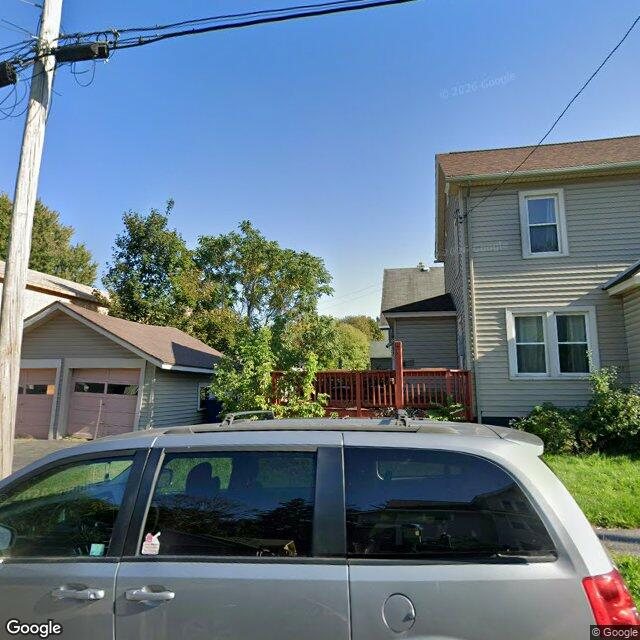

Property entry
1116 Wadsworth St & Chatham Pl
Published 2026-09-29T21:03:00+00:00
Parcel key: 004-20-270

City records
Matches use parcel IDs or normalized property addresses. Nearby properties are not treated as matches. Records may include historical or closed cases; check each record's status and dates. Publication dates are not source-data dates.
Vacant properties 0
No matches stored for this feed. The feed or address matching may be incomplete; this is not confirmation that no records exist.
Records refreshed 2026-10-27.
Rental registry 0
No matches stored for this feed. The feed or address matching may be incomplete; this is not confirmation that no records exist.
Records refreshed 2026-10-27.
Code violations 4
- Latitude
- 43.08191065
- Longitude
- -76.14486459
- Neighborhood
- Court-Woodlawn
- ObjectId
- 51314
- SBL
- 004.-20-27.0
- complaint_address
- 1116 Wadsworth St & Chatham Pl
- Latitude
- 43.08191065
- Longitude
- -76.14486459
- Neighborhood
- Court-Woodlawn
- ObjectId
- 51317
- SBL
- 004.-20-27.0
- complaint_address
- 1116 Wadsworth St & Chatham Pl
- Latitude
- 43.08191065
- Longitude
- -76.14486459
- Neighborhood
- Court-Woodlawn
- ObjectId
- 51320
- SBL
- 004.-20-27.0
- complaint_address
- 1116 Wadsworth St & Chatham Pl
- Latitude
- 43.08191065
- Longitude
- -76.14486459
- Neighborhood
- Court-Woodlawn
- ObjectId
- 51322
- SBL
- 004.-20-27.0
- complaint_address
- 1116 Wadsworth St & Chatham Pl
Records refreshed 2026-10-27.
Unfit properties 0
No matches stored for this feed. The feed or address matching may be incomplete; this is not confirmation that no records exist.
Records refreshed 2026-10-27.
AI image observations (unverified)
These observations are generated from an image, not an inspection or an official code finding. No human verification is recorded here.
Image capture date: Not recorded. The entry publication date does not establish the age of the image.
Automated image description
The property features a multi-story residence with horizontal siding and a detached two-bay garage, appearing generally maintained from the visible exterior.
Property type guess: single_family
Visible conditions
- Multi-story residence with light-colored horizontal siding.
- Detached two-bay garage with siding similar to the main residence and brown garage doors.
- Asphalt shingle roofs are visible on both the main residence and the garage.
- A red-stained wooden deck with railing is visible on the side/rear of the main residence.
- Visible windows appear intact.
- A grass lawn and mature trees and shrubs are present on the property.
Condition scores
- Porch Or Entry
- fair
- Roof
- good
- Siding Or Facade
- fair
- Trash Debris
- none_visible
- Vegetation Overgrowth
- none_visible
- Windows Doors
- good
- Yard Or Lot
- fair
Visible flags
- Active Construction Visible
- no
- Boarded Windows Or Doors
- no
- Fire Damage Visible
- no
- Structural Damage Visible
- no
- Vacancy Signs Visible
- no
Possible image-only flags
- No items reported.
AI review boxes
- No items reported.
Review reasons
- No items reported.
Image quality
- Available
- True
- Bytes
- 76714
- Needs Rerun
- False
['View of the property is partially obstructed by a vehicle and a utility pole.', 'The image primarily shows the side of the main residence and a detached garage.', 'Image capture date is 2020.']
ACS tract context
Census Tract 3; Onondaga County; New York
- Housing units
- 708
- Median gross rent
- 110100
- Median household income
- 74716
- Poverty rate
- 18.7
- Renter-occupied share
- 64.3
- Total population
- 1606
- Vacancy rate
- 6.6
OpenStreetMap nearby
Nearby map data is temporarily unavailable. This does not mean there are no mapped features.